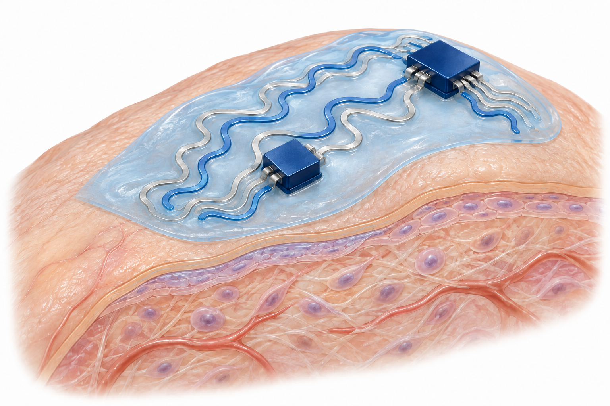

조직과 재료
Tissue coupling
조직에 맞닿는 재료의 접착, 역학, 분자 이동을 설계하여 감지나 치료에 필요한 접촉과 접근 경로를 다룬다.
20편의 논문탐색 →

01 / EXPLORE THE INTERFACES
BCCI의 계면 정의를 따라 접촉, 전도, 통합, 숙주 반응을 살펴봅니다.
조직과 재료
조직에 맞닿는 재료의 접착, 역학, 분자 이동을 설계하여 감지나 치료에 필요한 접촉과 접근 경로를 다룬다.
연성 기판 위의 전도 경로를 만들고 부착하여, 제작과 변형 과정에서 신호와 전력을 전달하는 문제를 다룬다.
변형 가능한 배선과 기능성 소자를 접속하고, 접촉 저항, 전기적 절연, 기계적 적합성, 공정 호환성을 함께 검토한다.
장치와 숙주
생체와 만나는 장치 표면의 오염, 마찰, 염증 및 이물 반응을 다루고, 필요한 생물학적 상호작용을 유지하는 방법을 검토한다.
논문마다 하나의 주 테마를 배정했습니다. 봉지·보호는 공통 요구이며, 교차 연관과 경계 분류는 개별 페이지에 표시합니다.
02 / READING THE EVIDENCE
기여와 한계, 비교 조건을 확인한 범위 안에서 읽습니다. 검증 수준은 논문마다 다릅니다.
Nature Communications, 17, 5526 (2026)
퀴논 기반 결합으로 젖은 조직에 접착하는 이중 네트워크 하이드로젤이다. 공개 본문에서 패치·주입 형태의 동물 지혈 및 절개 모델을 확인하여 습윤 조직 접착에 배치했다.
Science Advances, 11(37), eadz1228 (2025)
윤활 표면과 BDNF 고정화를 결합해 비특이적 부착 억제와 신경세포 상호작용을 함께 다룬다. 장기 기록의 표면–조직 반응이 중심이므로 숙주 상호작용에 배치했다.
npj Flexible Electronics, 8, 39 (2024)
건조 부품끼리, 또는 하이드로젤과 건조 부품 사이를 접합하는 재료다. 착용형·급성 이식 소자의 조립을 다루므로 소자 통합에 배치했다. 배선–칩의 전기 접속에 한정되지 않는 이종 재료 조립이라는 점에서 확장 분류다.
ACS Nano, 18(19), 12210-12224 (2024)
정전용량 섬유 센서, 유도 코일, 봉합 고정을 결합한 칩 없는 무선 측정 시스템이다. 소자 통합의 센서 연결에 배치하되, 배선–칩 접속 자체를 실증한 논문과 구분한다. 항오염 표면과 조직 고정은 다른 두 테마와 연결된다.
Advanced Functional Materials, 34(31), 2311696 (2024)
EGaIn 입자의 표면 기능화로 변형 가능한 전기화학 전극을 구성한다. 액체 전도체와 연결되지만 배선의 연속성 자체보다 전극 반응성이 중심이므로 확장 분류로 표시했다.
Advanced Science, 10(12), 2207237 (2023)
나노 구속 구조를 이용해 조직 접촉 하이드로젤의 팽윤, 역학, 전도성을 함께 설계한다. 조직 적응 역학이 주제이며, 전도 경로와 표면 접착은 교차 연관으로 읽어야 한다.
Science Advances, 6 (44), eabb0025 (2020)
정형외과 고정물에 윤활 계면을 형성해 세균 부착, 감염 관련 염증 및 골 치유를 함께 평가한다. 장치 표면에 대한 생물학적 반응을 다루므로 숙주 상호작용에 배치했다.
Advanced Functional Materials, 25 (21), 3114-3121 (2015)
은 나노와이어로 보강한 신축 전도성 섬유의 전기 전달을 다룬다. 초록에서 확인한 착용형 전자소자 방향을 근거로 변형 가능한 전기 배선의 전도성 섬유에 배치했다.
03 / BEYOND THE PAPER
기관 보도자료, 언론 기사, 출판사 소개와 연구자 게시물을 논문에 연결합니다.
관련 보도와 조사 범위 보기 →자료실의 검증 원칙 →